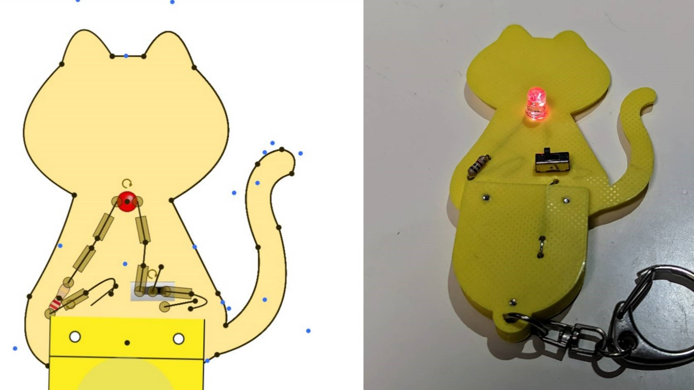
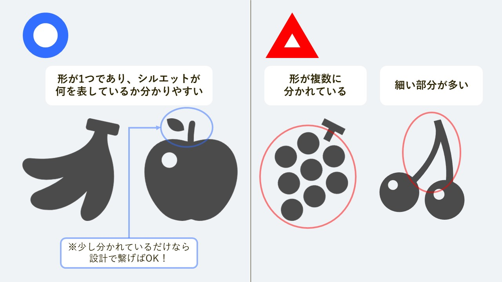
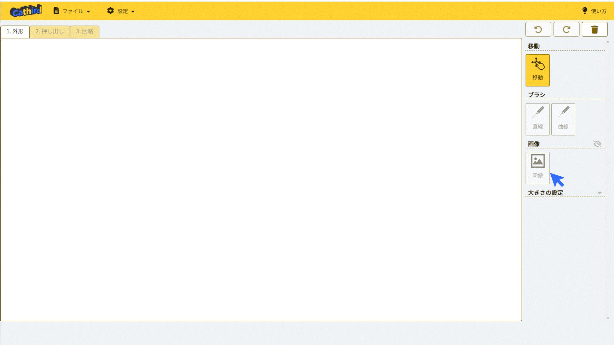
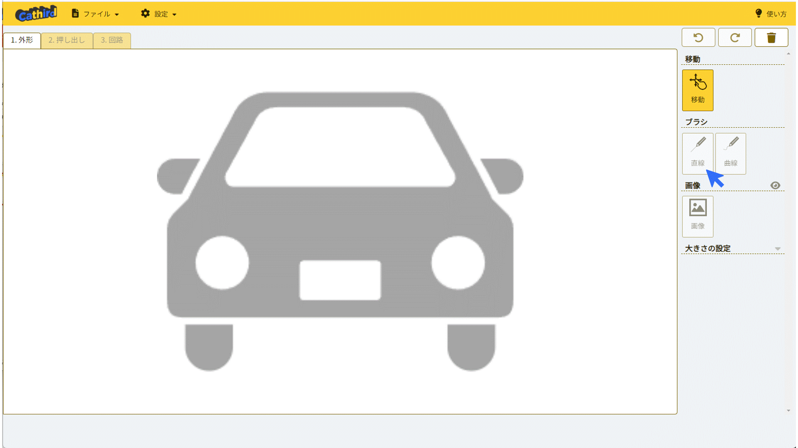
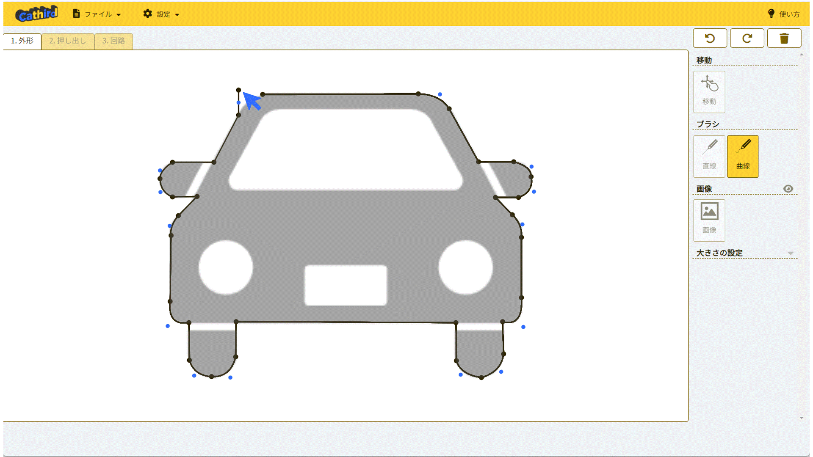
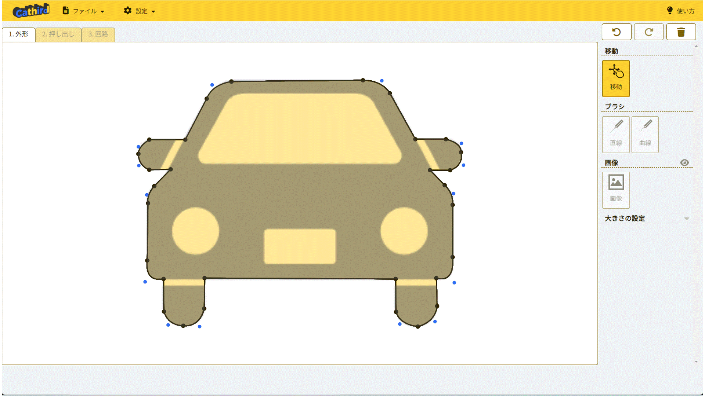

Cathirdの使い方
更新日：2023-12-26
00Cathirdでできること
Cathird（キャサード）は3Dプリンターで印刷し使用する回路基板を設計できるWebアプリケーションです。
Cathirdでは、
01. 基板外形の設計
02. 基板の押し出し
03. 回路の設計
の3つの手順によって回路基板を設計します。
下部では、それぞれの手順の操作方法、コツを紹介します。
01基板外形の設計
基板外形の画像の準備
Cathirdでは好きな形を回路基板として設計することができます。
しかし、3Dプリンタで印刷して使用する上で、複数の分かれた形からなるものや細い部分が多いものは印刷して使用することができません。
次の図のようなことに気をつけて回路基板の形を決めてください。
オリジナルのイラストを描き、画像として読み込んでもよいですし、フリーの画像サイトから画像を読み込んでもよいでしょう。
画像サイトから画像を利用する場合は、フリーアイコンサイト「ICOON MONO」の画像を利用してみることをおすすめします。
基板外形の画像の挿入
画像を選ぶことができたら、Cathird上に画像を読み込んでいきます。
1. 外形 のツールエリア（画面右側）＞ 画像 ＞ 画像 を選び、準備した画像を読み込みます。
読み込んだ画像を変更するときは、再度同じ操作を行い、別の画像を選択してください。
1. 外形 のツールエリア ＞ 画像 の右側にある マークを押すと画像の表示/非表示を切り替えることができます。
基板外形を描く
読み込んだ画像の基板外形をなぞり、回路基板の外形を作っていきます。
1. 外形 のツールエリア＞ ブラシ ＞ 直線 または、1. 外形 のツールエリア＞ ブラシ ＞ 曲線を選び、外形をなぞります。
ブラシツールを選んだ状態で、左クリックを押すことで線を描くことができます。
描画中に右クリックを押すことで移動モードに切り替えることができます。
移動モードでは線の点をドラッグすることで線の点の位置を再調整することができます。また、曲線内の青い点をドラッグすると曲線の曲がり具合を変えることができます。
外形をすべて描き切り、最初の点と最後の点が繋がると面が塗りつぶされます。
基板の大きさを変える
使用目的や設計に応じて回路基板の大きさを変えることができます。
1. 外形 のツールエリア＞ 大きさの設定 の右側にある / マークを押すと大きさの設定の表示/非表示を切り替えることができます。
大きさの設定の・高さ、・幅を変えると外形がその大きさに拡大・縮小されます。また、厚さを変更するとその厚さで出力されるようになります。
02基板の穴の設計
ここに説明を記載。※編集中